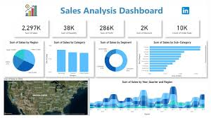

LatestProjects

Sales data anayltics
Brick and Motor Business [Power BI | SQL].Designed a Power BI dashboard to understand the AtliQ hardware goods sales trend.This dashboard can help in increase revenue atleast 7% in the next quarter.

Fake news Detection
The misleading information in online platforms is rapidly growing.to detect the fake news in the online platforms to reduce the spreading the misinformation in socail social-media

personal-Portfolio
Designed and developed a personal portfolio website using HTML, CSS, and JavaScript.Showcases my projects, skills, resume, and contact information.Responsive and user-friendly design suitable for desktop and mobile devices.